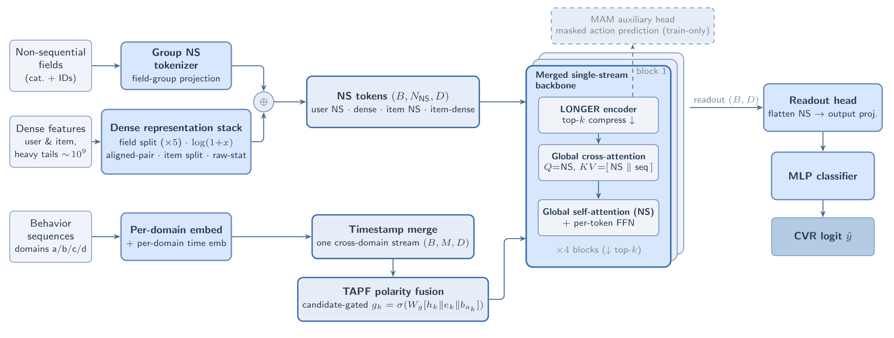
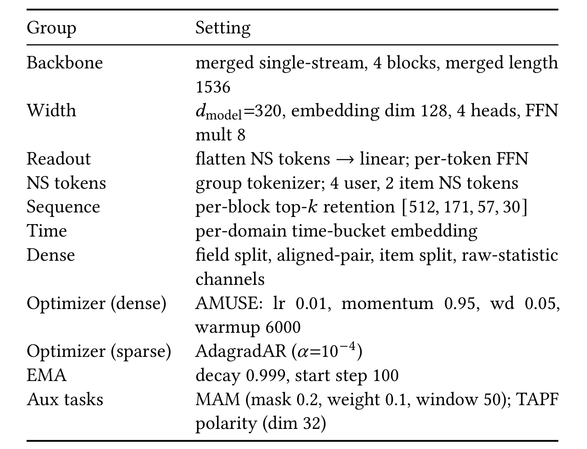
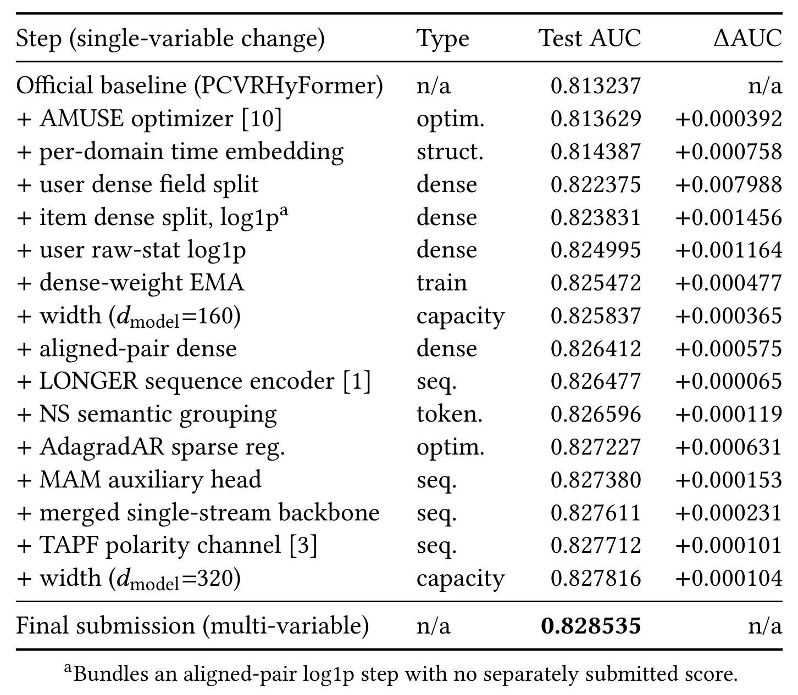
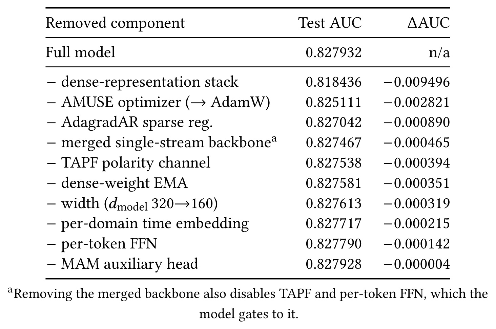
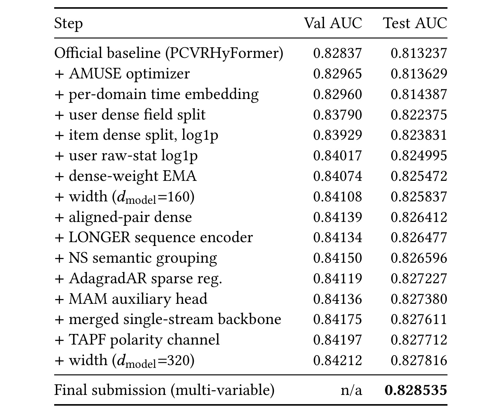

Dense Feature Representation over Sequence Modeling：UniRec 2026 的稠密表示与归因实验
论文：Dense Feature Representation over Sequence Modeling: A Solution to the KDD Cup 2026 UniRec Challenge
作者：Yi Zhang、Weiliang Ji；机构：Z Lab（中国成都）
公开版本：2026-09-17，arXiv v1；精读日期：2026-09-21
论文入口：arXiv:2609.19787
代码状态：本轮未核验到独立代码入口。以下结果均为作者报告，未独立复现；页码指原论文 PDF 页码。
1. 背景和问题
当统一推荐骨干把序列建模、特征交互和训练技巧组合在一起时，哪些机制真正改善未见数据上的 AUC 仍不清楚；按行组而非时间划分的验证集，还可能把有效改动的方向判断反。
本文研究点击之后是否发生购买的转化率预测。样本已经处在点击条件下，标签是该次点击能否转化，因此不能把这里的结果直接视为曝光点击率、召回命中率或整条推荐链路的收益。比赛提供第二轮工业数据，共约三千四百八十二万条点击记录，分布于五万七千六百九十一个行组。模型需要同时利用用户行为序列、多字段非序列属性，以及用户侧和物品侧的稠密向量与统计特征，对转化事件排序。作者关心的不是单纯把成绩推高，而是推高之后追问：收益到底来自哪个输入表示、哪个优化环节，还是来自更精细的行为序列建模？这个问题贯穿摘要、方法设计和最终消融。（第1、2页）
官方起点是 PCVRHyFormer。它已经把非序列字段变成非序列 token，把历史事件变成序列 token，再让注意力模块进行混合，最终输出转化分数。因此本文的比较起点并非没有序列的简单模型，实验也没有把行为序列整体删掉。作者增加跨域时间合并、极性通道、掩码动作预测等机制，是在一个已有序列与特征交互能力的系统上继续改进。理解这一点，才能正确阅读标题中的“超过序列建模”：它表达的是这套比赛配置下若干增量改动的收益排序，不是所有序列信息对推荐都没有价值，更不是推荐模型可以普遍取消行为历史。（第2页）
稠密特征通常被称为连续输入，但连续并不意味着相互可直接比较。本文的数据既含预训练向量，又含归一化统计、成对标签计数以及长尾原始统计量，部分数值的量级可达十亿。若只把这些列连接起来做一次线性映射，大尺度列可能主导梯度，较小尺度却有语义价值的信号不容易得到同等有效的表达。预训练向量适合保留它的几何结构，计数更需要控制数值跨度，标签计数还必须与标签身份对应。作者把表示预算放在这些差异上：按字段性质分组、分支归一化、对长尾值压缩，再让不同分支进入共同的交互空间。它并非额外引入一套新的用户数据，而是改变现有输入被模型读取的方式。（第2、5、6页）
序列方向的直觉也很合理。不同业务域的曝光、点击、转化事件如果分别编码，跨域发生的时间关系无法在同一条流内直接交互；合并后又会出现正负行为混杂的问题，需要动作类型或极性提示；仅依赖一个样本级转化标签训练长序列，监督也可能稀疏，可以添加逐位置辅助任务。然而合理的动机不能替代边际贡献测量。若强稠密特征已经概括了大量兴趣和统计信息，额外序列通道究竟补充了多少独立信息，要由当前数据和切分下的结果回答。本文的经验价值正在于把这些看起来都可能有用的机制放入同一个实验体系，而不是仅展示最终架构。（第1、2页）
第二个问题来自评估。训练与验证按行组顺序切分，验证取最后一成行组；这不是严格的时间留出。两部分共享同一时间窗口，而榜单测试来自另一份数据导出。模型在窗口内识别高频或高基数身份特征，可能帮助验证集，却未必帮助新导出数据。作者报告完整模型的验证 AUC 约为零点八四二、测试约为零点八二八，绝对差约零点零一四。这里不能只用“测试更难”一笔带过，因为两套指标有时连改动的正负方向都不同。正则化降低窗口内记忆收益时，验证分数可以下降，跨导出数据的分数却上升；若仍机械地以验证提升为准，就会筛掉本来有利的改动。（第4页）
作者采取两种互补比较。第一种是逐步升级链，每次从已经采用的配置出发加入机制，以记录工程搜索过程。第二种是在完整模型上进行留一消融，将一个组件去掉再训练，用来观察强系统对这个组件的依赖。它们回答的问题不同：前者受进入顺序影响，后者受最终系统中其他组件影响。比如优化器在弱基线上的小收益，不能代表它在良好稠密表示上的作用；反过来，较早加入的时间嵌入可能因后续模块补充信息而变得不那么重要。笔记因此会分别解释升级增量、移除损失和最终提交，而不把三者拼成一组可直接相加的贡献。（第3、4页）
还有一个容易遗漏的限定：论文称测试集为留出榜单，但团队用榜单反馈做了贪心前向选择，并在每天三次提交限制下筛选方案，平台又只保留提交最高分。测试标签没有直接进入训练，并不意味着测试指标没有参与研究决策。榜单具有跨数据导出的检验价值，同时也承担了模型选择功能。本文据此提供的是一份有明确工程约束的竞赛归因报告，不是完全隔离开发过程的最终泛化检验。对这一限制保持区分，既不需要否认密集特征处理的大幅收益，也不应把末位小数的差异解释成稳定、可迁移的规律。（第3、4页）
最后，论文篇幅只有六页，方法和实验依赖附录中的列级配方、配置表及双指标升级链才能完整还原。主文中“字段拆分”并不等于任意均匀切块；“优化器改进”同时涉及稠密参数与稀疏嵌入的不同处理；“最终模型”也可能指有验证划分的消融基准或取消验证留出的最终提交。后文以这些实际对象为线索，先说明输入如何进入系统，再比较实验依据及其边界。对于独立代码入口、未提供的实现细节和无法隔离的效应，保留未核验或未测量状态，不把简短论文中的空白用通用实现习惯补成事实。
2. 方法
2.1 统一特征空间与读出
方法沿原文顺序从总体架构进入稠密表示、合并序列，再到优化与正则化。所有输入都投影到共同宽度的 token 空间，交互的输出是一个点击转化 logit。Figure 1 给出了完整推理主路及训练专用支路。（第2、3页）

Figure 1 要从左侧的三类输入分别读起。第一路是类别字段与身份标识，经按字段分组的分词器产生非序列表示；第二路是用户与物品稠密输入，经字段拆分、数值变换和专门聚合形成稠密 token。两路共同组成图中间的非序列集合，因此图里的“非序列”既包含类别嵌入，也包含处理过的稠密信息。第三路才是多个业务域的事件历史：先保留域内嵌入与时间桶信息，再按时间戳合并成一条流。图中的批量维、非序列数量、序列长度、表示宽度分别描述不同轴，不能把四个业务域理解成四层模型，也不能把五个用户稠密分组误读成所有非序列 token 的总数。
中间的极性融合位于序列进入骨干之前，读取候选物品相关信息，使同一段历史的表达能够依赖本次候选。右侧骨干重复四块，每块先压缩序列，再通过以非序列 token 为查询的全局交叉注意力读取非序列与序列的联合键值，之后做非序列自注意力及逐 token 前馈变换。这个设计保留了较短的全局读出集合，却逐步减少后续处理的序列位置。它并不是将全部序列逐项直接展开到分类头，也没有把稠密输入绕过交互网络单独输出分数；稠密表示与行为证据仍在同一骨干中汇合。
最后，非序列 token 被展平，经输出投影和多层感知机生成转化 logit。图上方虚线框连接第一块输出，是预测被掩盖动作的辅助头，只在训练阶段提供监督，推理不需要从这个头产生动作标签。需要特别区分的是，只有这个掩码动作预测分支属于训练专用；时间合并、长序列编码和极性融合本身仍在前向评分链路里。若将全部序列增强都写成“仅训练使用”，就无法复现图中的候选条件计算。
这张架构图说明了信息流和模块依赖，并不直接证明各模块有效。完整骨干看起来有很多序列处理组件，但本文后续发现最大的成绩损失来自移除左侧稠密表示分支的处理配方。图中逐 token 前馈层与极性通道又受合并骨干开关约束，解释消融时必须一起考虑。读图时把“实际使用”“依赖关系”“贡献测量”分开，才能同时理解作者为何保留一个复杂完整模型，以及为何对其中多数序列增强的独立收益保持保留。
2.2 稠密特征表示
用户侧十七个稠密字段不是等长拆成五份，而是依性质形成五个 token：字段61是预训练求和嵌入；字段87是 LMF 嵌入；字段89至91是三个单位范数的对齐统计；字段62至66、118、121构成标签与数值对齐组；最后一个 token 将中等尺度分支与原始统计分支取平均。中等尺度字段120、130在其分支采用 LayerNorm；原始统计字段123、131、132先经过截断对数变换再投影。附录将整体分组投影描述为线性层、LayerNorm 与 SiLU，但又对中等尺度头明确注明仅 LayerNorm，复现时不能将这些差别抹成统一预处理。（第5页附录A）
符号解释：$x$ 是待处理的原始统计值，$\max(x,0)$ 将负值截断为零，$\log$ 为对数运算，$z(x)$ 为送入后续分支的压缩值。该式是附录实际配方，较主文简写的 $\log(1+x)$ 更明确地限定了输入处理。它压缩长尾列的量级，使极大计数不至于单靠数值幅度主导梯度；它并不保证所有列方差相等，也不能不加判断地用于有正负语义的预训练向量。负值究竟代表缺失还是有意义信号，需要依赖数据定义，论文未提供更多通用规则。
对齐组的重点是保留“哪个标签对应多少计数”。 每一列稠密计数有与之对齐的整数标签列，标签通过与类别分词器共享的嵌入表取向量，计数经上述变换后作为权重，再按权重和归一化池化。将附录的文字配方展开，可写为下式；这是便于阅读的等价表达，不是论文另列的编号公式。
符号解释：$i$ 枚举对齐位置，$a_i$ 是该位置的标签标识，$x_i$ 是对应计数，$\mathbf{E}[a_i]$ 是共享标签嵌入表中的向量，$z$ 是上一式的截断对数变换，$\mathbf{t}_{\mathrm{pair}}$ 是权重和非零时的归一化聚合结果。该表达让计数决定相应标签的贡献，而非把计数值本身当作一段可直接线性投影的语义向量。分母为零时如何回退、填充标签如何屏蔽，原文未披露，不能在笔记中杜撰常数或默认向量冒充实现。
物品侧四个稠密字段形成三种头：字段127是预训练向量头，字段128是中等尺度头，字段124、129是先压缩的原始统计头，最后取平均得到一个物品稠密 token。用户侧分出五个 token，而物品侧多头平均成一个，二者并不对称；用户最后一个分组本身也由两个头平均。因而“分组数”“分支头数”“输出 token 数”必须分开数。移除完整稠密表示栈时，五个实现开关一起关闭，用户与物品稠密特征分别退化为单次线性投影。后续大幅损失是这套组合配方的整体效应，不能全部归给对数变换或某一列。（第5、6页）
2.3 时间合并、极性通道与掩码动作
原基线按业务域分别编码序列；作者将各域事件按时间戳合并，再使用沿 LONGER 路线的逐块保留机制压缩序列，让全局非序列 token 读取跨域证据。合并后曝光、点击、转化等行为相互穿插，共享空间未必自然显露其正负含义，因此接入从 TAPF 移植的候选条件极性通道。每个动作类型字段有零初始化偏置，并使用如下门控参与事件与候选的融合。（第2页）
符号解释：$k$ 是事件位置，$h_k$ 是该位置的事件表示，$e_k$ 是参与融合的候选物品表示，$a_k$ 是动作类型，$b_{a_k}$ 是相应极性偏置，$\Vert$ 表示拼接，$W_g$ 为门控映射，$\sigma$ 为 sigmoid，$g_k$ 为门控输出。论文没有完整展开这些张量的维度与最终融合代数式，因此这里仅解释其候选条件门控作用，不推断一定是标量门，也不补写未给出的残差形式。零初始化限制了起始偏置，但不等价于整个门控输出为零。
训练时还加入 MAM：以零点二概率掩盖事件的低基数类别属性，通过按域设置的多分类头预测被掩盖内容。辅助分支从第一块获取表示，提供逐位置监督，迫使编码器在属性不可见时利用物品内容。作者只移植掩码动作目标，没有移植 UniPinRec 的下一物品检索损失，因为后者直接预测高基数物品标识，可能进一步强化身份记忆。推理时不使用随机属性遮盖和辅助预测头；正常事件属性、跨域合并、极性门控及序列压缩仍用于转化评分。这种训练推理差异是额外去噪监督与主干输入机制之间的区别，不应被混为一谈。
2.4 优化与正则化
稠密参数采用 AMUSE，它属于对更新进行正交化的 Muon 家族；稠密权重还维护指数移动平均，用于模型选择。稀疏嵌入则使用 AdagradAR，在 Adagrad 上添加自适应正则，抑制对稀有身份的记忆。两类参数的更新不能统称为“整个模型切换优化器”：稠密矩阵的优化几何与稀疏身份的泛化问题分别处理，后续消融也分别报告 AMUSE 和稀疏正则的损失。（第2页）
本文没有展开 AMUSE 正交化、AdagradAR 正则或主任务损失的完整更新方程，故不从其他论文搬来公式充当本模型实现。可复核配置是学习率、动量、权重衰减、预热、正则系数与移动平均时机，详见实验配置表。它们既影响收敛，又影响模型对高基数标识的依赖程度。特别是稀疏正则可能降低同窗口验证分数却提高另一数据导出的分数，说明训练控制的成败不能只用单一划分的最优验证值判断。至于这种作用能否跨平台、跨采样规则重现，本文并没有提供足够数据来定论。
3. 实验结果
3.1 数据、配置与训练口径
实验使用第二轮 UniRec 数据，规模为34.82M条点击记录和57,691个行组。常规运行训练五个 epoch，附录给出的 batch size 为1024，并按最后10%的行组构建验证集。原文同时写“七张 GPU”和“六路数据并行”，但没有解释剩余设备用途，也未明确批量数对应全局还是单卡，因此不据此反推总批量、吞吐或每轮耗时。模型共530M参数，其中179M为稠密参数，351M为稀疏嵌入。（第2、5页）

Table 3 将“完整模型”的结构含义固定下来。它使用四个合并单流块，合并长度为1536，模型宽度为320，嵌入维度为128，注意力头数为四，前馈扩展倍数为八。这些数字属于不同配置层次：嵌入维度不等于骨干宽度，序列原始预算不等于每层保留数。四块依次保留512、171、57、30个序列位置，使后部处理更短的历史表示。配置表描述的是保留预算，没有给出对应每层实测耗时，故不能据长度比例宣布端到端加速倍数。读出采用非序列 token 展平后线性投影，逐 token 前馈层也在完整模型中开启。
表中按语义分组的类别分词器配置为四个用户和两个物品非序列 token，必须结合图一理解其与稠密分支的关系，不能把它直接解读成模型所有非序列输入总共只有六个。稠密行列出了字段拆分、对齐对、物品拆分和原始统计通道，具体列号仍需附录配方补足。时间行指按域设置的时间桶嵌入，而不是模型改用严格时间切分训练。训练表中的时间编码、数据划分的时间顺序、行为流合并的时间戳，是三个不同对象；名称相近但不解决同一个问题。
优化配置显示稠密 AMUSE 的学习率为0.01，动量0.95，权重衰减0.05，预热6000步，之后采用常量学习率；稀疏 AdagradAR 的正则系数为十的负四次方。移动平均从第100步开始，衰减为0.999。掩码动作任务的遮盖比例为0.2、权重为0.1、窗口参数为50，极性通道维度为32。这些是还原运行的重要起点，却并非一个自动可运行的复现包；例如表里给出的窗口参数没有在主文充分展开语义，不能自行补成某个确定的时间单位。附录还要求检查点附带特征模式、分组和训练配置文件，由推理端据此重建输入定义，说明仅保存权重并不足以保证训练推理一致。
最后，表中配置用于理解后面的对照条件，不代表所有结果都来自同一次训练。升级链终点尚未包含最终额外加入的逐 token 前馈层；留一消融的完整模型恢复验证留出；最终榜单提交则取消该留出、使用全部训练数据并选择逐轮快照。即使网络形状接近，训练数据量和快照选择规则不同也会改变成绩。配置表与训练协议必须一起看，才能避免把最终得分与消融基准的差值全部归给某一个结构模块。
3.2 逐步升级链与最终提交
Table 1 展示从官方基线到升级链终点的工程路径，再单列最终提交。这里的测试 AUC 都是榜单分数，增量是相对前一个已采用步骤的绝对差值。（第3页）

Table 1 的起点为0.813237，链终点为0.827816，合计增加0.014579。最明显的跃升来自用户稠密字段拆分，一步增加0.007988，约占整条链增益的百分之五十五。随后物品稠密拆分与对数处理增加0.001456，用户原始统计的对数处理增加0.001164，对齐对稠密表示增加0.000575；这四个稠密相关表项合计0.011183。这里可以说主要收益集中于表示处理，但不能把各行理解成互不相关、在任意加入顺序下都不变的收益常数。表中已经有前面采用的优化器和时间嵌入，后续机制又建立在更强表示之上。
表头虽然称单变量链，物品拆分一行的脚注明确折叠了一个未单独提交的对齐对对数处理步骤。因此0.001456并不是经过完全隔离的“仅物品拆分”收益，也不能从表里拆出对齐对对数处理的单独成绩。笔记保留这一脚注，因为它关系到作者实验粒度，不能只转录漂亮的数值而忽略条件。AMUSE最早加入时仅增加0.000392，域内时间嵌入增加0.000758；它们的相对大小稍后会被留一消融改写，说明前向链更适合描述搜索历史，而不是直接作为最终组件重要性排名。
序列相关步骤的单次增量更小：LONGER为0.000065，掩码动作为0.000153，合并骨干为0.000231，极性通道为0.000101。语义分组增加0.000119，宽度从160扩到320增加0.000104。作者采用这些步骤，不等于每个步骤的改善都得到可靠统计确认。噪声尺度来自一个中段配置的另一个种子复跑，两次测试相差0.00044；据此取约正负0.0004作为启发式参考。没有逐步多种子均值、方差或置信区间，不能用这条参考带完成正式显著性检验，也不能声称带内所有效应严格为零。
最终提交得分0.828535，作者报告比赛第十名。该行不是链上的第十六个单变量步骤：它同时加入逐 token 前馈层，取消验证留出，使用全量训练数据，并按平台只保留最高分的规则提交各 epoch 快照。因此它比链终点高出的0.000719，只能当作多种条件变化合并后的结果。对于可复现实验，应先复现有明确留出条件的链或消融协议，再单独讨论全数据训练与快照选择；直接追逐最终最高数值会把网络结构贡献、额外训练样本和选择收益混在一起。
从实验设计上看，逐步链是对榜单进行贪心前向选择，而非预注册、完全不看测试反馈的机制实验。每天三次提交限制使作者需要筛选候选，保留最高分的规则又使一次失败提交不降低显示成绩。这个过程能够形成有效比赛方案，但有机会放大偶然正波动。稠密表示的千分级至百分级跃升与多数序列步骤的万分级变化仍然形成鲜明量级差别；可信的阅读方式是保留这条主线，同时拒绝把所有正的小增量都写成已证实的稳定收益。
3.3 留一消融与归因边界
Table 2 从包含逐 token 前馈层的完整架构出发，恢复验证留出后重新训练，使消融共用一个协议。基准为0.827932，不能与最终全数据提交的0.828535混用。（第4页）

Table 2 中去掉完整稠密表示栈后，测试 AUC 降至0.818436，损失0.009496；将 AMUSE 换为 AdamW 后降至0.825111，损失0.002821；移除稀疏自适应正则后为0.827042，损失0.000890。这三个结果在量级上明显高于大多数单独的序列增强。作者把稠密栈移除损失与升级链总增益比较，得到约百分之六十五；它是强调相对量级的归一化参照，不是一份严格可加的因果贡献分解。稠密栈本身也有五个共同关闭的开关，并没有在本表逐一拆开。
最需要警惕的是合并单流骨干行。去掉它后损失0.000465，但原表脚注说明这还会连带关闭极性通道与逐 token 前馈层。因此这是有依赖关系的联合移除，无法直接称为“合并骨干单独贡献”。作者尝试在可加假设下减去极性与前馈层的移除损失，估计骨干自身约为正0.00007；然而没有真正独立移除骨干、同时保留其他功能的干净实验，而且交互项未知。简单减法只是一种解释性估计，不能升级为测得的组件效果，更不能据此声称已经严格排除了所有跨域序列交互收益。
其余损失分别为极性通道0.000394、稠密权重移动平均0.000351、宽度由320退回160为0.000319、域内时间嵌入0.000215、逐 token 前馈层0.000142、掩码动作辅助头0.000004。最后一项在这一运行中几乎不可见，足以提醒读者不要因辅助任务动机合理就默认它有效。反过来，缺少多种子估计使我们不能把每个小差值解释成准确效应大小。所谓落在或邻近噪声带，是证据分辨能力有限的表达；它既不是严格拒绝零假设，也不是证明模块在所有数据上等价。
升级链与留一消融的不同也提供了组件交互的线索。AMUSE在最初弱基线中只增加0.000392，完整模型中换回 AdamW却损失0.002821，后者约为前者七倍。时间嵌入则相反，早期增加0.000758，最终移除只损失0.000215。由此可以说组件价值随系统上下文改变，但不能进一步断言已定位到某个明确的二阶交互，因为没有完整因子实验。更强的稠密输入与不同更新方式可能协同，这是合理解释，仍应与已测数字区分。
原文还主动报告 Muon 替代 AMUSE 的结果：测试为0.828205，比完整模型高0.000273。这个差异位于启发式噪声尺度内，支持的结论是正交化优化器家族在本实验中比 AdamW更有竞争力，而不是 AMUSE必然最优。完整消融基准与最终提交还相差0.000603，作者归于全数据训练与快照选择，这两项也没有单独隔离。把不利于首选方案的变体结果一起保留下来，比只讲最终冠军配置更有助于后续判断哪些模块值得优先复验。
3.4 验证集反向信号与负结果
Table 4 把升级链的验证与测试并列，可直接检查同一改动在两个评估面上的方向，而不是只凭完整模型的总差推测分布偏移。（第6页）

Table 4 中官方基线的验证分数为0.82837，测试为0.813237；链终点验证为0.84212，测试为0.827816，差为0.014304，与主文所说约0.014一致。大部分步骤两个指标都高，但绝对数值整体错位，说明不能把验证的数值水平当作未来导出数据的预期表现。表末最终提交的验证栏为不可用，因为它取消验证留出，而不是遗漏了一次应有的评估。因此最终最好成绩不能填入一个推算的验证 AUC，更不能假装与上面每一行享有相同的模型选择条件。
方向反转最清楚的是 AdagradAR：验证从0.84150降为0.84119，差为负0.00031；测试却从0.826596升为0.827227，差为正0.000631。主文还报告早期轮次四次扩大高基数身份嵌入的运行，出现验证升而测试降的相反模式。它们共同指向窗口内记忆与跨导出泛化之间的冲突，但早期轮次的四次运行没有完整逐项表格，不能将其与第二轮链合并计算统计量。对数处理等强收益能在两个面上同时呈现，也说明验证并非完全没有信息，问题是它对特定记忆与容量方向可能带有系统偏差。
作者进一步在训练导出内部按时间重分，得到更接近测试的分数尺度，但仍没恢复稀疏正则的正确方向：时间留出约降0.0006，测试约升0.0006。这个结果比“以后只需按时间切分”更有警示意义。同一数据导出内部的时间关系，与跨导出数据之间的分布改变并不等价；时间重分能够缓解某些问题，却不足以修复所有机制排序。原文将其解释为跨数据导出分布偏移，笔记保留这个解释，同时不擅自指定到底是用户构成、采样规则还是标签成熟度发生了改变，因为论文没有提供这些细分证据。
负结果也有不同证据层级。显式 DCN-v2 特征交叉旁路、候选条件查询门、按类别历史检索的候选注意力，分别在验证集下降0.00121、0.00258、0.00382，作者据此未花费榜单预算继续测量。它们只能写成验证筛除，不能写成测试已经确认失败。作者的依据是已见方向反转的验证降幅均小于0.0004，而这些退步更大；这是提交预算下的启发式判断，并非保证大幅验证下降永远不会反转的统计定理。本文自己揭示了验证偏差，阅读负结果时更应保留这一层选择条件。
真正测过测试的负面尝试包括门控自注意力序列编码器：单次提高0.00037，却增加约百分之五十训练时间，作者未采用；手工构造的时段、意图、价格序位等行为特征，在强稠密与优化组合上没有带来测试增益。此外，按域序列长度从512扩至1024、合并序列从1536扩至2432，没有改善验证成绩，因此未采用；这属于验证层面的扩容结果。论文没有完整线上延迟、吞吐、收入或校准指标，不能把训练时间取舍改写成线上服务收益。最稳妥的结论是：在这套数据、表示和预算下，优先改进稠密特征处理与优化方式，比继续堆叠若干序列细节取得了更大、也更容易识别的 AUC 变化。
4. 总结
这篇报告最扎实的发现，是在一个已经具备序列与特征交互能力的官方模型上，输入表示的修整与优化方式选择，比多数额外序列机制带来更大的成绩变化。用户稠密字段按语义与尺度拆组，原始长尾统计先压缩，标签与计数对齐后共享嵌入聚合，物品分支分别处理预训练向量和统计量，再接入统一骨干。这些处理让模型更有效地利用已有输入；移除整个稠密栈损失约零点零零九五，是最有说服力的量级证据。优化器家族的对照是第二条主线，而不是最终选择的某一个名字拥有普适优势。
论文也提醒我们，性能归因必须指定参照点。早期升级链衡量加入机制时的收益，最终消融衡量强系统对机制的依赖，两者不同并不构成矛盾。最终榜单最高分又附加了全数据训练和快照选择，不能与两者直接替换。这里更值得学习的是同时记录这些参照关系，而不是只保留一个最终分数和一幅复杂架构图。对推荐工程而言，先把稠密列的数值尺度、语义对齐、稀疏身份记忆和评估划分搞清楚，再判断是否增加序列复杂度，是由本文证据支持的实验优先级；它不自动决定其他任务的模型选择。
结论仍受至少四类限制。第一，数据集中在一次竞赛的转化预测与特定导出划分，没有跨平台、跨任务重复验证，不能外推到召回、点击率或所有长序列推荐。第二，绝大多数对照是单种子运行，约正负零点零零零四只是一次复跑形成的参考尺度，缺乏正式不确定性估计。第三，榜单反馈参与前向选择与最高快照选择，它不是完全未触碰的最终测试面；提交上限还影响了哪些负结果能够获得测试证据。第四，合并骨干消融连带移除极性和前馈层，稠密栈也整体关闭多个开关，无法把组合效果准确拆为独立模块贡献。
还需要保留两项复现边界。正文与附录没有充分解释七张设备和六路并行的关系、批量口径、部分辅助窗口参数以及对齐聚合的零分母处理，本轮也未核验到独立代码入口。因此当前产物是可追溯的论文精读，不能自称已复现训练系统。论文主要报告排序 AUC，没有校准、线上业务收益、完整推理耗时和资源成本；尽管个别替代编码器报告训练时间增加，这仍不足以得到生产部署的综合收益排序。
后续最优先的复验是固定数据与训练预算，对稠密栈、正交化优化器以及主要序列增强做多种子配对运行，给出均值、离散程度和稳定性，并单独比较不同输入处理的组合。第二，应构建真正跨数据导出且时间有序的开发验证协议，将只用于最终评估的数据与调参反馈隔离，检查稀疏正则和身份容量的方向是否恢复一致。第三，应解除骨干开关对极性与逐 token 前馈层的联动，以独立控制实验估计交互，而不是用损失相减替代未做的运行。若再增加工程评估，则需在相同预算下补充吞吐、延迟、校准与业务相关指标，判断微小排序收益是否值得维护额外组件。
因此，本文支持的是一个带条件的经验判断：在所研究的强稠密输入、转化标签与跨导出测试分布下，表示处理和优化策略是优先级更高的改进轴，若干精细序列增强的作用尚未超过现有实验的分辨能力。它没有证明行为序列无用，也没有证明榜单可以永久替代可靠验证协议。保留这些限定，才能把竞赛经验转化为可复验的研究问题，而不是将标题压缩成一句过度泛化的口号。